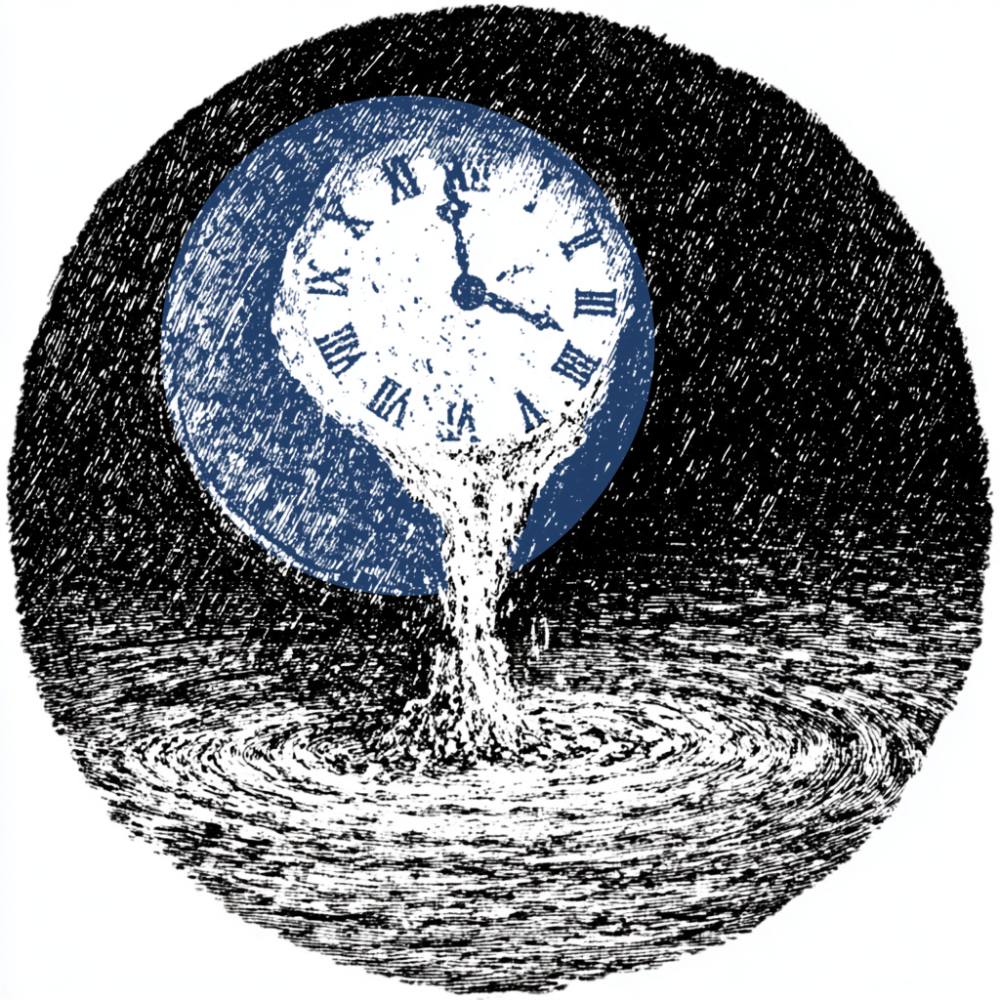

2.2. Search
Our next algorithmic primitive involves unstructured search. The basic idea is that we have a database \(\mathcal{D}\) of \(d\) entries \(x_i \in \mathcal{D}\), and a single marked item \(x_m\) we are searching for inside that database. “Unstructured” means that there is no binary search tree, categories, or other internal scaffolding that a search could use; we can only check an entry against an oracle function \(f: \mathcal{D} \to \{0, 1\}\) that returns \(1\) if \(i=m\) and otherwise returns \(0\), i.e. \(f(x_i) = \delta_{im}\). This is analogous to trying entries in a combination lock until the lock opens.
With a quantum computer, we can promote the database to an algebra
\(\mathcal{A}_\mathcal{D}\), with a projector \(\Pi_m=\Pi_m^{(Z)}\) onto the
marked item; this answers “yes” or “no” when
presented with a state \(\pi^{(Z)}_i\) representing item \(x_i\), and thus
encodes \(f\):
\[
\pi^{(Z)}_i(\Pi_m) = \delta_{im} = f(x_i).
\]
In yaw, this takes the form:
*> def f(i): ... return proj(Z, i) | char(Z, m)
Quantumly, our best bet is to try everything at once. This is most naturally represented by the state \(\pi_+ = \pi^{(X)}_0\), which has a corresponding dual projector \(\Pi_+=\Pi_0^{(X)}\). We will focus on the subalgebra \[ \mathcal{A}_{\Pi} = \langle \Pi_m, \Pi_+\rangle \subseteq \mathcal{A}_d \] generated by the secret answer \(\Pi_m\) and the parallel guess \(\Pi_+\), since these are the two distinguished operators we have at hand. The goal will be to construct an operator that maps the initial guess \(\pi_+\) to the correct answer \(\pi_m = \pi^{(Z)}_m\). A simple ansatz is time evolution by some Hamiltonian \(H\) contained in the subalgebra: \[ e^{-iHt} \triangleleft \pi_+ \overset{?}{=} \pi_m, \quad H \in \mathcal{A}_{\Pi}. \] Since it maps \(\pi_+\) to \(\pi_m\), we expect \(H\) to involve both projectors, with the simplest choice being \[ \label{eq:20} H = \Pi_m + \Pi_+. \] We implement this as
*> H = proj(Z, m) + proj(X, 0)
For a very small amount of time evolution \(t \ll |H|\), this evolution
takes the form \(e^{-iHt} \approx 1 - i t (\Pi_m + \Pi_+)\), and hence
\[
e^{-iHt} \triangleleft \pi_+ \approx (1 - t^2)\pi_+ + t^2 \Pi_m
\triangleleft \pi_+ + \mathcal{O}(it),
\]
where the imaginary terms \(\mathcal{O}(it)\) involve left and right
products that keep the full result coherent. 
Time evolution gradually exchanges one state for the other.
This is decreasing the amount of pure \(\pi_+\) in the state
by \(t^2\), filtering out \(\pi_m\) from \(\pi_+\) by applying the projector
\(\Pi_m\), and replacing to the tune of \(t^2\). In words, it appears to be
turning \(\pi_+\) into \(\pi_m\) at a quadratic rate in time! Using
pseudocode for Hamiltonian evolution, our algorithm is then
*> def guess(t): ... prop = exp(-1j*t*H) ... final = prop « char(X, 0) ... _, index = measure(Z, final)() ... return index
Assuming this Hamiltonian works (you can show this in Exercise 5.1), how quickly will it evolve \(\pi_+\) to \(\pi_m\)? The shortest time to evolve between states \(\pi_\text{init}\) and \(\pi_\text{final}\) in a two-level system with Hamiltonian \(H\) is governed by the Rabi uncertainty relation (Exercise 5.2) \[ \label{eq:rabi}\tag{2.2.1} t^* \geq \frac{\pi}{2\sqrt{\kappa}}, \quad \kappa = [H \triangleleft \pi_\text{init}] \left(\Pi_\text{final}\right). \] We can think of \(\kappa\) as a transition amplitude between \(\pi_\text{init}\) and \(\pi_\text{final}\). In our case, \[ \kappa = \pi_+ \left( (\Pi_m + \Pi_+)\Pi_m(\Pi_m + \Pi_+)\right) = 4 \pi_+ \left(\Pi_m\right) = \frac{4}{d}, \] since (by symmetry) any \(Z\) projector should have the same expectation \(\pi_+ (\Pi^{(Z)}_i) = C\), and the \(Z\) projectors add to unity: \[ 1 = \pi_+ (I) = \sum_{i=0}^{d-1}\pi_+ (\Pi^{(Z)}_i) = dC \quad \Longrightarrow \quad C = \frac{1}{d}. \] Thus, from \(\eqref{eq:rabi}\), we find an optimal evolution timeThis is in agreement with the results of Farhi and Gutmann. Reference to be added. \[ \label{eq:22} t^* \geq \frac{\pi \sqrt{d}}{4}. \] Incorporating the dimension and marked itemStrictly, we should replace this with dependence on the projector \(\Pi_+\), but it complicates dependencies. as parameters, we obtain a pseudocode search algorithm
*> def hamiltonianSearch(d, marked): ... H = proj(Z, marked) + proj(X, 0) ... t = pi*sqrt(d)/4 ... prop = exp(-1j*t*H) ... final = prop « char(X, 0) ... return measure(Z, final)()[1]
Evolution with this Hamiltonian is messy. We can approximate it using
the result of Trotter and Suzuki,Add reference. See Exercise 5.3.
who independently derived
\[
e^{-it(A + B)} = \lim_{n\to\infty}
\left[e^{-itA/n}e^{-itB/n}\right]^n,
\]
with an error given byReference Childs et al.
\[
\left\Vert e^{-it(A + B)} -
\left[e^{-itA/n}e^{-itB/n}\right]^n\right\Vert \leq
\frac{t^2}{2n} \Vert [A, B ]\Vert.
\]
In our case, \(A = \Pi_+\) and \(B = \Pi_m\). The exponential simplifies for
projectors, since
\[\begin{align*} e^{-it \Pi/n} & = \sum_{k\geq 0} \frac{(-it/n)^k
\Pi^k}{k!} \\ & = I + \Pi\sum_{k\geq 1} \frac{(-it/n)^k }{k!} = I +
(e^{-it/n} - 1) \Pi. \end{align*}\]
In yaw, this approximation scheme becomes (real code!)
*> def trotter(projList, time, steps): ... factors = [I + (exp(-1j*time/steps)-1)*proj ... for proj in projList] ... return prod(factors)**steps
This gives a family of search algorithms, depending on the total number of steps, or equivalently, the step size \(\delta = t/n\), in which we evolve to the final state \[\begin{align*} \pi_\text{final} & = [R_\delta(\Pi_m) R_\delta(\Pi_+)]^n \triangleleft \pi_+ \\ R_\delta(\Pi) & = e^{-i\delta \Pi} = I + (e^{-i\delta} - 1 )\Pi, \end{align*}\] and measure in the \(Z\) basis to make our guess \(m^*\), \(Z \overset{\pi_\text{final}}{\longleftarrow} m^*\). Continuing to assume that the algorithm saturates the Rabi bound, we get a compact algorithm for Trotterized search:
*> def trotterSearch(d, marked, time, steps): ... PiList = [proj(Z, marked), proj(X, 0)] ... prop = trotter(PiList, time, steps) ... final = prop « char(X, 0) ... return measure(Z, final)()[1]
For \(n\) steps and \(t = \pi\sqrt{d}/4\), the error is bounded by \[ \frac{t^2}{2n} \Vert [\Pi_+, \Pi_m]\Vert = \frac{\pi^2d}{32n}\Vert [\Pi_+, \Pi_m]\Vert \leq \frac{\pi^2\sqrt{d}}{32n}, \] where \(\Vert \cdot \Vert\) indicates the largest (absolute) eigenvalue.See exercises. This means that when the number of steps \(n \sim \sqrt{d}\), the error is \(\mathcal{O}(1)\): \[ \frac{\pi^2\sqrt{d}}{32n} \sim \frac{\pi^2}{32} \approx 0.3. \] Our Trotterization formula is no longer reliable here. One can show (Exercise 5.5) that in this regime there is an additional \(\pi\) in the relation between steps and evolution time,This is analogous to the way that moving round a circle turns a circumferential step of length \(2\pi r\) into a diameter span of length \(2r\). so that \[ e^{-it(A + B)} \approx \left[ R_{\pi\delta}(A) R_{\pi\delta}(B)\right]^n. \] and hence for \(\delta = 1\) or \(n = \pi\sqrt{d}/4\), we have steps \[ R_\pi(\Pi) = I + (e^{-i\pi} - 1) \Pi = I - 2\Pi, \] with \(R_\pi(\Pi_m)\) the oracle reflection and \(R_\pi(\Pi_+)\) the diffusion operator. Together, they give the Grover operator \(G = R_\pi(\Pi_m) R_\pi(\Pi_+)\), with \[ \label{eq:11} \pi_\text{final} = G^n \triangleleft \pi_+, \quad Z \overset{\pi_\text{final}}{\longleftarrow} m^*. \] This is the famous discrete search algorithm of Lov Grover.Add references. We can implement a Hamiltonian version of this algorithm, accounting for the additional factor of \(\pi\):
*> def groverTrotter(d, marked): ... steps = int(pi*sqrt(d)/4) + 1 ... return trotterSearch(d, marked, pi*steps, steps)
or the textbook version (with some minor refinements) as follows:
*> def grover(d, marked): ... $alg = qudit(d) ... def reflect(P): return I - 2*P ... G = reflect(proj(Z, marked)) * (-reflect(proj(X, 0))) ... r = int((pi/4)*sqrt(d)) + 1 # take the ceiling ... return measure(Z, (G**r) « char(X, 0))()[1]
There is a minus sign in the operator \(G = -R_\pi(\Pi_m) R_\pi(\Pi_+)\), irrelevant to the final measurement, and we use the ceiling \(n = \lceil \pi\sqrt{d}/4\rceil\) for the number of steps. Let's check that this is accurate:
*> d, marked, trials = 5, 3, 100 *> sum(grover(d, marked) == marked for _ in range(trials))/trials 0.96
You can play around with this and see that the hit rate improves with the size of the database!
What is the significance of this algorithm? Unlike teleportation, which involves a new way of transmitting information, quantum search is a new way of performing a classical task. For a database of \(d\) items, Grover or Trotterized Hamiltonian evolution take \(\mathcal{O}(\sqrt{d})\) stepsIn fact \(\Theta(\sqrt{d})\) steps. Rabi establishes a lower bound, and the exercises show the upper bound. to find the marked needle in the unstructured haystack, while the best a classical computer can do is \(\mathcal{O}(d)\), since it must test every possibility until it finds the right one. This represents a quadratic speedup for search, and is a prime example of what is called quantum computational advantage.